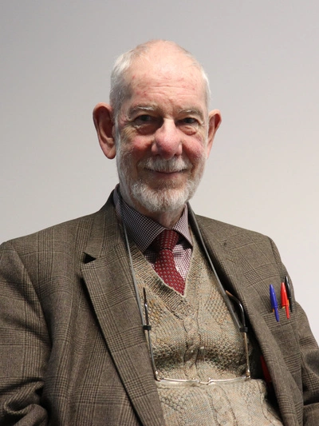

The Symposium on Solid and Physical Modeling (SPM) is a yearly international conference held with the support of the Solid Modeling Association (SMA). In 2026, it will be jointly hosted with Shape Modeling International (SMI 2026). The combined event will take place from July 6 to July 9, 2026, in Istanbul Technical University, Türkiye. The conference focuses on all areas of geometric and physical modeling, including their applications in design, analysis, manufacturing, and fields such as biomedical engineering, geophysics, and digital media. Additionally, the event will feature the presentation of the 2026 Pierre Bézier Prize, honoring outstanding contributions to solid, shape, and physical modeling.

Istanbul Technical University, Türkiye

Texas A&M University,
USA

The University of Manchester, Great Britain

University of Florida,
USA

The University of Texas,
USA

Concordia University,
Canada

The University of Edinburgh,
UK
Inria / Ecole Polytechnique, France
ETH Zurich / Google
University of Victoria, BC, Canada
Budapest University of Technology and Economics, Hungary

After obtaining a PhD in computer graphics in Grenoble, France, Professor Desbrun joined Caltech as a postdoctoral fellow in 1998. He joined the CS department at the University of Southern California as an Assistant Professor in January 2000, where he remained for four years in charge of the GRAIL lab. He then became an Associate Professor at Caltech in the CS department in 2003, where he started the Applied Geometry lab and was awarded the ACM SIGGRAPH Significant New Researcher award. He took on administrative duties after he became a full professor, becoming the founding chair of the Computing + Mathematical Sciences department and the director of the Information Science and Technology initiative from 2009 to 2015. More recently, he received an International Chair from France's Inria, has been the Technical Papers Chair for the ACM SIGGRAPH 2018 conference, spent a sabbatical year at ShanghaiTech University in the School of Information Science and Technology, and was elected as ACM Fellow and a member of the SIGGRAPH Academy in 2020. He is now working at LIX as both a researcher at Inria Saclay (where he established the Geomerix lab), and as a Professor at Ecole Polytechnique in France, where he focuses on geometry, machine learning, and simulation.
While numerical methods are often treated as low-level exercises in floating-point operations and index bookkeeping, looking at computation through the lens of geometry is frequently the key to predictive modeling. This talk offers a fast-paced survey of how respecting the geometry underlying various shape modeling and physical simulation tasks results in efficient, versatile tools for both research and industry. We begin by exploring how discrete connections provide a rigorous framework for both the grooming of virtual characters and high-dimensional data analytics. We then pivot to the geometric foundations of calculus, illustrating how mimicking the structure of exterior calculus ensures that computational operators remain faithful to their fundamental continuous definitions. The discussion shifts to the geometric nature of mechanics, where we show that preserving physical constraints—such as symmetry and conservation laws—is an effective way to ensure long-term simulation stability. We conclude with a candid look at the current state of machine learning for geometry, weighing the undeniable flexibility of neural methods against the risks of losing the structural guarantees provided by classical geometric methods. Throughout this talk, the recurring theme is that drawing inspiration from differential geometry in the discrete setting is rarely just about mathematical purity; it is a practical necessity for building a robust and general-purpose computational toolbox.

Bernd Bickel is a Full Professor of Computational Design at ETH Zurich and a Research Scientist at Google. He previously served as a Professor and Vice President at ISTA and worked as a Research Scientist at Disney Research. He received his PhD in Computer Science from ETH Zurich in 2010. His research intersects visual computing, digital fabrication, and machine learning, focusing on computational tools that bridge digital design and physical manufacturing. His work includes high-fidelity performance capture, data-driven material modeling, functional metamaterials, and creative AI and generative design, integrating physics-based simulation with machine learning to create high-performance structures and systems. Bernd's contributions have been recognized with a Technical Achievement Award from the Academy of Motion Picture Arts and Sciences (2019), the ACM SIGGRAPH Significant New Researcher Award (2017), an ERC Starting Grant (2016), and the ETH Medal (2011) for his doctoral dissertation.
As the boundaries between the digital and physical worlds blur, we face a profound opportunity to reimagine how we design the world around us. While advanced manufacturing, artificial intelligence, and spatial computing offer unprecedented potential for architecture, engineering, and art, their impact is often limited by a lack of design tools that can seamlessly bridge human creativity with physical realizability. In this talk, I will explore the transformation of design workflows from traditional CAD tools toward intelligent design systems. I will discuss how optimization-based design and tailored data-driven models enable novel approaches for interactive shape exploration and beyond, demonstrating their applicability to challenges ranging from intricate microstructures to high-performance building facades. A central theme is the control problem: the inherent tension between the probabilistic nature of modern generative AI and the high precision and editability required for professional engineering. I will conclude by reflecting on the evolving role of algorithms as creative partners. I will share a vision for a future where technology provides the "digital superpowers" that complement rather than replace human intuition, enabling us to build a more sustainable, functional, and resilient world.

Brian Wyvill is a professor emeritus at the University of Victoria, BC, Canada. Along with the late Prof. Ray Earnshaw, he was one of the first to gain his PhD in computer graphics in the UK in 1975. As a post-doc at London's Royal College of Art, he worked on computer animated sequences for the original Alien movie, the first Hollywood film to contain significant computer generated scenes. Brian joined the University of Calgary faculty in 1981. His work focused on developing algorithms for implicit modeling and animation. In 1986, with his brother, Geoff Wyvill, he pioneered the first iso-surface polygonizer, followed by implicit texturing, and the BlobTree. In 2006 he joined the computer science department at the University of Victoria in British Columbia with a Canada Research Chair.
With Marie-Paule Cani, Brian started the Implicit Modeling series of conferences in 1995, which merged with Shape Modeling International in 2001. The late Professor Kunii was Brian's mentor for many years. Brian has been active in organizing conferences inspired by Prof. Kunii, such as CGI and SMI. He also served on the executive committees for Eurographics and ACM SIGGRAPH, later as SIGGRAPH VP for seven years. Brian retired from the University at the end of 2018 and spends his time rock climbing, writing novels, developing software for visualizing timelines of a novel, and composing and arranging music. His piece for strings, The West Coast Trail Lament, was recently performed in Victoria by the DieMahler Ensemble led by violinist Pablo Dimeckie.
Italian mathematician Alessandro Ricci laid foundational groundwork for implicit surface blending in his 1973 Ph.D. dissertation, which pioneered the use of continuous scalar fields and Boolean operations, such as union and intersection, to define complex solid shapes. Since Ricci's early work, implicit modeling has moved from being a fringe academic concept to a widely accepted and rapidly growing technique in the Computer-Aided Design (CAD) industry. While it has not replaced traditional CAD methods, it has become the industry standard for specific, highly complex engineering and advanced manufacturing workflows.
In 1985 my brother, Geoff Wyvill, visited me on sabbatical and we worked on a polygonizer for what would be known as implicit surfaces and modeling. After publication, Alessandro Ricci sent me a copy of his 1973 paper, opening up a window into what would become the direction of my research for most of my career. The trend at the time was to pursue mesh representations, whereas my contributions to computer graphics are in the general area of modelling techniques that do not use polygons. Moreover, there was a period of around 30 years when researchers interested in implicit modeling were considered unimportant by an anonymous ACM SIGGRAPH reviewer, or even to be "wasting valuable computer time," as David Parnas and Edsger Dijkstra commented to me at a talk on implicit modeling I gave at Memorial University in 1990.
My talk focuses on the development of implicit modelling and an encouragement to young researchers to stick with their original ideas even if, especially if, these ideas do not match mainstream research. I also delve into a few projects in the realm of computers in the arts, which leave the human as the artist without replacing a person with AI. My recent work on visualizing timelines for authors of novels with complex plots is similarly directed at facilitating the author as an artist rather than allowing AI to interfere in the creative process.


Tamás Várady is an accomplished researcher in CAD/CAM. He joined the Computer and Automation Research Institute of the Hungarian Academy of Sciences (MTA SZTAKI) in 1976 and led its Geometric Modeling Laboratory for more than 20 years. His research spanned various areas of surface and solid modelling, including geometric design, interrogation techniques, edge and vertex blending, reverse engineering, segmentation, advanced surface fitting and multi-sided transfinite patches.
In 2003 Dr. Várady accepted the position of CTO at Geomagic, Inc. and guided the company in developing reverse engineering technologies for several years, holding primary responsibility for their market-leading modeler Geomagic Studio.
In 2010 Dr. Várady returned to the academic world and joined the Budapest University of Technology and Economics (BME IIT), where he is now an emeritus professor. At the university, he has continued his work on general topology surface representations and developed constrained fitting algorithms to reconstruct models matching the original design intent.
Throughout his career, Dr. Várady has dedicated himself to serving as a mentor to students and young researchers. In addition to his research and professional accomplishments, he contributed extensively to the international community, including serving on the editorial boards of Computer Aided Design (CAD) and Computer Aided Geometric Design (CAGD).
Tamás Várady talks about his 50-year journey through the realms of geometric modelling. His main contributions fall into five major areas. (i) In the early eighties, he focused on the integration of solid modelling and parametric surfaces, including methods to generate edge and vertex blends. (ii) In the mid-nineties, he started to explore reverse engineering, formalizing its pipeline and developing various algorithms for triangulation, segmentation, surface fitting, blend reconstruction, and recovering the design intent of engineering parts. (iii) A crucial chapter of this research was the recognition and enforcement of various local and global engineering constraints, such as parallelism, perpendicularity, concentricity, alignment and symmetry. (iv) The most extensive part of Várady's research relates to the generation of genuine multi-sided surface patches determined by surface ribbons. This covers the early overlap patch, the generalized Coons patch and the various n-sided generalizations of Bézier and B-spline patches, which can now be defined over multiply connected domains with curved boundaries, as well. He also suggested interior control structures for these general topology surface patches and applied them in polyhedral design. (v) Finally, Várady and his co-authors have continuously monitored the state-of-the-art, producing widely cited survey papers on parametric blending surfaces, reverse engineering and recently, multisided parametric patches.

Georgia Tech, USA
Zhejiang University, China
University of Texas at Dallas, USA
Inria Center at Université Côte d'Azur, France
LTCI-Telecom Paris, Institut Polytechnique de Paris, France

Jarek Rossignac was born in Poland. He was educated in France (Lakanal, then ENSEM and U. Nancy) and later in the US (U. of Rochester). He was employed at IBM Research (as Research Staff Member and then as Manager) and later at Georgia Tech (as Director and later as Professor in Interactive Computing). He co-chaired 22 conferences (including 5 SMI) and 13 committees (Including one SMI PC). He coauthored about 35 patents and 200 papers. He received 26 Research or Best Paper awards (the Bezier award and the Eurographics and the Solid Modeling Fellow awards).
The key foci of his research include: Triangle mesh simplification and compression; CSG model construction, simplification, evaluation, and generalization; Natural user interfaces for designing shapes and animations; and Interpolation of points, curves, and transformations.
The fundamental steps of inventing a solution are the revelations about the true nature of the problem or about an unexpected approach worth exploring. I am conscious of how these revelations grow in my head, even though I do not use words or images when I think. In this presentation, I attempt to share examples of such revelations that led to interesting solutions to problems of defining and computing averages and interpolations of points, curves, similarities, or tilings. Many of these revelations were inspired by two guiding principles: symmetry and steadiness.

Qiang Zou is an Assistant Professor at the State Key Laboratory of CAD&CG, Zhejiang University. He received his Ph.D. from UBC. He is interested in the computational principles that connect geometry, design intent, and manufacturing processes. His work has been published in leading venues such as CAD, ASME JMD, CIRP Annals, and SIGGRAPH; several of his methods have been transferred to industrial CAD/CAM modelers. His contributions have been recognized with the SMI Young Investigator Award, the Lu Zeng-Yong CAD&CG High-Tech Award (First Prize), the CCF CAD&CG Young Investigator Award, and several best paper/poster awards. He serves on the Editorial Board of Computer-Aided Design, and has served as Organizing Chair for SMI 2025, SPM 2025, and ChinaGraph 2026.
Shape modeling is a fundamental computational technique in engineering design and manufacturing. Unlike visual shape modeling, engineering-oriented shape modeling must address geometric precision, topological robustness, design intent, and manufacturability altogether, making it both mathematically interesting and practically significant. In this talk, I will discuss our research on high-performance geometric computing, intuitive surface modeling, and robust solid modeling, and show how they help streamline design-to-manufacturing workflows. I will also share our recent efforts toward intelligent CAD, where geometric algorithms are integrated with data-driven strategies, engineering constraints, and domain knowledge. These explorations, hopefully, will support the development of next-generation CAD/CAM.
Congyi Zhang is an Assistant Professor in the Department of Computer Science at The University of Texas at Dallas. Before joining UT Dallas, he was a postdoc at the University of British Columbia, a Research Associate at the University of Hong Kong, and a Visiting Researcher at the Max Planck Institute for Informatics in Germany. Dr. Zhang earned his Ph.D. in Computer Science from Peking University and his B.Sc. in Mathematics from Fudan University. He has published over 20 papers in top-tier conferences and journals, including SIGGRAPH, SIGGRAPH Asia, IEEE VR, CHI, ICCV, and TVCG. His research interests encompass computer graphics, human-computer interaction, and deep learning for visual computing.
Detailed 3D shapes are fundamental to computer graphics, visual computing, and AI-driven 3D understanding, but their increasing geometric complexity poses significant challenges for rendering, reconstruction, and learning. Dense, unstructured representations often preserve surface detail but can be inefficient to store, difficult to process, and poorly suited for scalable computation. This talk presents my research vision toward compact and structured representations of detailed 3D shapes. The goal is to develop representations that retain high-frequency geometric fidelity while exposing useful structure for efficient rendering, accurate reconstruction, and effective learning from 3D data. By organizing complex geometry into compact and computationally meaningful forms, such representations can bridge classical geometric processing and modern data-driven methods, enabling future systems to represent, analyze, and synthesize detailed 3D shapes more efficiently and robustly.

Guillaume Cordonnier is a Research Scientist at the Inria Center at Université Côte d'Azur. He received his PhD in Computer Science from Université Grenoble Alpes under the supervision of Marie-Paule Cani and Eric Galin, and later held a postdoctoral fellowship at ETH Zurich. Since joining Inria in 2021, he has been leading research on the simulation of natural phenomena, at the intersection of computer graphics, physical simulation, and geosciences, with a strong focus on combining physical realism with expressive user control. His contributions include machine learning approaches to accelerate and control physical simulation, as well as new models for landscape and terrains, where he aims to develop a new paradigm for physics-based modeling of large-scale natural scenes.
Many of the static macro-structures in the world around us are the frozen remnants of continuous, deep-time physical processes. Landscapes, in particular, emerge from the interplay between tectonic uplift and erosion. In this talk, we discuss different methods that leverage physical laws to simulate and predict the morphogenesis of large-scale terrains. A major challenge in this domain is accounting for the impact of various surface flows (rivers, sediments, debris flows, ...) which evolve at time scales orders of magnitude smaller than those of macro-scale mountain erosion. To address this, we explore the concepts of hydrology networks and flow paths: two computational proxies we developed to efficiently capture the long-term impact of these fast-evolving flows. We demonstrate the benefits of these methods from both an application and a methodological standpoint. In terms of application, they enable the formation of diverse geological structures. Methodologically, they allow for the formulation of novel mountain generation algorithms, for instance based on analytical solutions to the erosion law, which contributes to bridging the gap between physically-based simulation and procedural generation.

Amal Dev Parakkat is a tenured Assistant Professor (Maitre de Conferences in French) at LTCI-Telecom Paris, Institut Polytechnique de Paris, since September 2021. He received his PhD from the Indian Institute of Technology Madras under the supervision of Ramanathan Muthuganapthy. He also held various academic and research positions, including Postdoctoral Researcher at École Polytechnique with Marie-Paule Cani, Assistant Professor at IIT Guwahati, and Research Associate at TU Delft with Elmar Eisemann. His research centers on practical algorithms for digital content creation and digital geometry processing, with a primary focus on sketch-based interfaces. He leads the ANR SketchMAD project on novel algorithms for sketch-based modeling (2024–2028) and heads the IGD master's at the Institut Polytechnique de Paris.
Human expression, whether through over-drawn sketches, sparse points, or mid-air VR gestures, leaves behind an incomplete, ambiguous trail of data that fundamentally conflicts with the mathematically precise representations required by computers. In this talk, I reflect on my early-career journey dedicated to resolving this conflict by building discrete geometric frameworks that infer clean, reliable shapes from such imperfect inputs. I will trace my work across a trajectory unified by the use of discrete Voronoi-Delaunay dualities and abstract shape representations to extract intended geometry from chaos. Starting with my early work on 2D sketch processing, I show how these discrete principles extend to interactively decode structures like pixel grids and stippled art, and conclude with my recent advances in surfacing sparse 3D VR sketches.
Recipient of the 2026 Tosiyasu L. Kunii Award (Posthumously)

Professor Malcolm Sabin
The shape modeling community lost Professor Malcolm Sabin on June 14, 2026, just weeks before SMI 2026. Malcolm was one of the pioneers of geometric modeling, whose research profoundly influenced subdivision surfaces, computer-aided geometric design, and shape modeling. Beyond his scientific achievements, he was a generous mentor, collaborator, and friend whose influence extended across generations of researchers.
This special commemorative session honors Malcolm's life and contributions through the posthumous presentation of the 2026 Tosiyasu L. Kunii Award. The session will begin with a brief eulogy celebrating his scientific legacy, followed by personal memories and reflections shared by colleagues, collaborators, former students, and friends. Together, we celebrate not only Malcolm's remarkable achievements, but also the kindness, generosity, and inspiration he brought to our community.
Yildiz Technical University, Türkiye
Istanbul Technical University, Türkiye
Thanks to our sponsors


{kind=link}
{kind=link}
{kind=link}